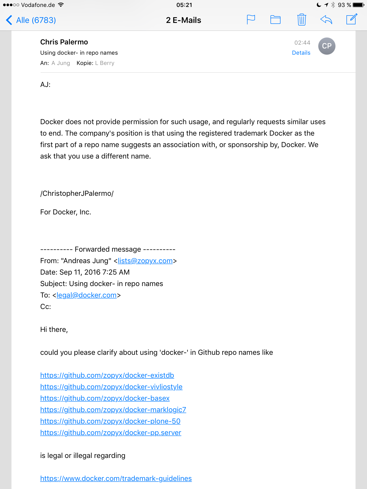

Bringing real collaborative editing to Plone
Integration of Plone 5 with the Smashdocs authoring solution.

As part of our professional publishing strategy we will bring real collaborative editing to Plone.
We started with the integration of Smashdocs - "a web-based intelligent word processing platform".
Smashdocs is about collaborative editing in the browser with decent support for collaborative and concurrent authoring, tracking changes, discuss and comment on content, review and approve/reject content changes. Smashdocs support different roles: readers, commentators, editors and approvers.
Here is a quick&dirty screencast showing the first cut of the integration with Plone 5.
Press release: XML-Director 2.0 released
XML-Director is our Plone-based integration platform for building high-quality enterprise-grade publishing solutions.
Find the official press release for the recent XML Director 2.0 release here
Don't use "docker" in Github repo names or as Twitter handles
The strict trademark guidelines of Docker Inc. can easily be turned into a case against any open-source programmer or project using "docker" as a repository name or for example as a Twitter handle. Act now!

The trademark guidlines of Docker Inc. for protecting the trademarks are dangerous and harmful to the open-source community around Docker.
In particular you are not allowed to use
- repository names for your open-source projects starting with 'docker'
- use 'docker' as part of a Twitter names like @dockersucks, @dockerfan or @docker-usergroup-nyc
- ....
I asked Docker Inc. about using 'docker-' as part of some of my repository projects on Github.
So here is there answer:

So what does this mean?
You are subject to be contacted the Docker Inc. for renaming or removing your project.
In the worst case Docker Inc. can sue you.
To make it clear: every company has a right to defend the trademarks and copyrights - no exception.
However a company like Docker Inc. that is driven and backed by a huge open-source community has certain obligations regarding the fair-use of trademarks by the community.
The current Docker trademark policy is an asshole policy:
Brought to the point: We are Docker Inc, we are the kings. You (the community)....we don't care about you.
How can Docker Inc. get out of this problem:
- relax the policy for open-source project regarding repository names, social media names etc. for open-source usage of Docker technology
- allow the usage of 'docker' in domain names for open-source in general e.g. for usergroups etc. (any person should be allowed to ask 'docker' as part of domain name for non-commercial purposes).
We had the same discussions with Zope Corporation 15 years ago regarding trademarks etc. around the term Zope. In the end Zope Corporation moved most of the copyrights and trademarks into the Zope Foundation and established a fair-use policy that worked for the years. The same is true for other entities holding copyrights and trademarks like the Plone project with its legal entity the Plone Foundation.
Copyright and trademarks vs. open-source community is not a contradiction. The last decade and longer showed that there is reasonable way to deal with commercial interests side by side with community interests.
So Docker Inc play nice and fair with the people that made you what you are.
Clarification: Docker Inc. did not ask me to take down or rename my repositories. As you can see from the screenshot I asked Docker Inc for a clarification on this issue and the answer is shown above.
XML-Director 2.0 update
XML-Director is our Plone-based integration platform for building high-quality enterprise-grade publishing solutions.
XML-Director is our Plone-based integration and implementation platform for delivering enterprise-grade publishing solutions to customers.
The core features of XML-Director are:
- transparent application access to XML databases (Exist-DB, BaseX, Marclogic Server), DMS (Alfresco), WebDAV-based storages (Dropbox, Sharepoint) and cloud storages like Dropbox, Google Drive or S3
- registries for XML validation and XML transformations
- export and import of data and content
- a REST API for managing content, workflows and conversions
- a very secure CMS with workflow support, user and group management etc. based on the CMS Plone
Due to its modular and generic design, XML-Director is capable to integrate third-party conversion services easily and seamlessly:
- conversion from DOCX to XML (and back to DOCX lossless) using C-REX conversion service
- conversion from XML/HTML to high-quality PDF (supporting PDF converters like PrinceXML, PDFreactor or Antennahouse)
- EPUB conversion using Bookalope
- DITA conversion (using DITA-OT or XMLMind DITAC)
- various XML related transformations using Transpect
- integration with Calibre
In XML-Director Version 2.0 (soft-released lately) we introduce some more new features
- full support for Plone 5.0 and 5.1
- a new user interface for navigating and filtering your content and data
- a reimplemented import form for zipped content or a new multi-file upload
- support for Dropbox as content source
- integration Twitter and Facebook for pushing content updated directly to social media
- integration with Nimbudocs editor for building decent WYSIWYG web-to-print applications
Work-in-progress
- an easy-to-use browser-based DITA topic editor
- a graphical DITA map composer for creating maps from existing content repositories using drag & drop
- integration with Smashdocs editor
- planned: integration with XEditor
- planned: integration with oXygen XML Web Author
Our References
- Complete list of reference related to Produce & Publish and XML Director
- Onkopedia Casestudy - XML-based publishing with Plone, Exist-DB and XML-Director
- Onkopedia Casestudy - XML-based publishing with Plone, Exist-DB and XML-Director (German)
Contact
ZOPYX Andreas Jung
info@zopyx.com
www.zopyx.com
www.xml-director.info
Stellungnahme der Antidiskriminierungsstelle des Bundes zur Beförderung von großen Personen bei Airlines
In einer formlosen Anfrage an die Antidiskriminierungsstelle des Bundes habe ich gefragt, ob es das Zusammenpferchen von großen Personen wie mich (203cm) in der Economy Klasse der meisten Airlines auf dem Platz einer Legehenne rechtlich vereinbar ist und ob sich aus der Körpergrösse ein Anrecht auf eine menschenwürdige Beförderung ableiten lässt. Die Antidiskriminierungsstelle antwortet mit einer interessanten Rechtseinschätzung....

Cross-browser hyphenation support for Plone 5
Most browsers lack hyphenation support (except Firefox). This Plone 5 add-on brings customizable hyphenation support to Plone 5 e.g. for better readability of the Plone 5 toolbar in German language.
Browsers - even in 2016 - are in general bad when it comes to hyphenation using CSS. CSS provides support for hyphenation for a long-time through hyphens: auto. However most browser excepts Firefox do not support hyphenation of text. There are some Javascript add-ons around for providing hyphenation support across all browsers and most common languages - solutions like Hyphenator.
In general hyphenation on the web is not that important as hyphenation in print due to different display sizes, responsive design etc. However in some situations you want proper hyphenation for words or texts when the horizontal width of a box is limited and the standard word breaking algorithms of browser just generate a bad result.
This is one of (my) issues with the Plone 5 toolbar which looks like this (out-of-the-box with German as language) with completely unacceptable and improper word breaks.
zopyx.plone.hyphenator solves this problem by integrating Hyphenator with Plone 5.
As a result the Plone 5 toolbar looks much nicer - in particular because a proper hyphenation.
zopyx.plone.hyphenator can be configured to apply hyphenation to arbitrary page element by specifying a list of related CSS selectors within the Hyphenator control panel
Hyphenator supports most of the frequently used languages. Further hyphenation options provided by Hyphenator will be supported by zopyx.plone.hyphenator over time.
Plone 5 and XML-Director 2.0 with Dropbox integration
After many months of pain with Plone 5.0, XML-Director 2.0 will be finally available for production soon. This screencast shows you how to integrated Plone via XML-Director with Dropbox (or other databases or (cloud) storages).
We are looking for some upcoming projects support by a web/frontend developer.
- MUST speak GERMAN fluently
- MUST be based in Germany
- MUST be able to travel within Germany (Hamburg, Berlin, Stuttgart area)
Applicant must be fluent with
- Javascript, jQuery and related frameworks
- AngularJS 2 and/or ReactJS
- CSS
- tools like SaSS, Less, Bootstrap or related Frameworks
Applicant must be able to able to design decent web user interface.
You should have a reasonable understand of the "mobile first" approach
and some background in building "progressive web apps". You should be familar
with the most decent tools in web/mobile development etc.
In the first phases of the project you will direct interact with the CEO/CTO
for creating initial mockups and UI prototypes .
A big plus would be experiences with native applications (Android, iOS)
through some frameworks like Phonegap etc. for building hybrid applications
that work both within the browser and for better user experience as native app.
Knowledge in Python would be nice but is not a must however you should be fluent
with Linux, the command line and tools like GIT. Additional skills welcome.
This position is a remote position but being located in Germany (see above) is a big plus.
Contact
Please get in touch with Andreas Jung (info@zopyx.com) and include your CV, references, experiences with related frontend and web technologies.

This is a followup to two earlier blog posts [1 2] related to our XML-Director Web-to-Print approach.
Today we added section that describes some internals - in particular how to write templates and styling.
Plone 5 as foundation for XML Director Web-to-Print solutions (continued)
XML Director is an generic solution for building XML-based content management solutions based on the CMS Plone. This video shows how we build easy-to-use web-to-print applications using CSS Paged Media (XML/HTML for input, CSS for layout and styling). This demo features the PDFreactor PDF converter and the Nimbudocs WYSIWYG editor by RealObjects. Plone 5 as foundation for XML Director Web-to-Print solutions

This is a follow of my blog entry from yesterday.
There is now a demo portal where you can try Plone 5 with the XML-Director based Web-to-Print solution. You can pick up one (out of four templates) and modify selected parts of the documents either using a form or directly within the PDF layout.